Ces travaux pratiques se base sur le cours de base pour les développeurs Android fourni par Google afin de les préparer pour le test de certification Associate Android Developer. Vous obtiendrez le plus de valeur de ce TP si vous travaillez successivement dans les codelabs.
Introduction
Dans cette pratique, vous apprendrez comment installer Android Studio, l'environnement de développement Android. Vous créez également et lancez votre première application Android, Hello World, sur un émulateur et sur un périphérique physique.
What you should already know
Vous devriez pouvoir:
- Comprendre le processus général de développement de logiciels pour les applications orientées objet utilisant un environnement de développement intégré (IDE) tel que Android Studio.
- Démontrez que vous avez au moins 1 à 3 ans d'expérience de la programmation orientée objet, dont une partie est axée sur le langage de programmation Java. (Ces travaux pratiques n'expliquent pas la programmation orientée objet ni le langage Java.)
What you'll need
- Un ordinateur sous Windows ou Linux ou un Mac sous MacOS. Voir la page de téléchargement Android Studio pour connaître la configuration requise actualisée.
- Accès Internet ou autre moyen de charger les dernières installations d'Android Studio et Java sur votre ordinateur.
- Android Studio version Koala (2024.1.2).
What you'll learn
- Comment installer et utiliser l'IDE Android Studio.
- Comment utiliser le processus de développement pour créer des applications Android.
- Comment créer un projet Android à partir d'un modèle.
- Comment ajouter des messages de journal à votre application à des fins de débogage.
What you'll do
- Installer l'environnement de développement Android Studio.
- Créer un émulateur (périphérique virtuel) pour exécuter votre application sur votre ordinateur.
- Créer et exécuter l'application Hello World sur les périphériques virtuels et physiques.
- Explorer la disposition du projet.
- Générer et afficher les messages de journalisation à partir de votre application.
- Explorer le fichier
AndroidManifest.xml.
Une fois Android Studio installé avec succès, vous créerez, à partir d'un modèle, un nouveau projet pour l'application Hello World. Cette application simple affiche une fenêtre (Activity) vide sur l'écran du périphérique virtuel ou physique Android.
Voici à quoi ressemblera l'application finie:
Android Studio fournit un environnement de développement intégré complet comprenant un éditeur de code avancé et un ensemble de modèles d'application. En outre, il contient des outils de développement, de débogage, de test et de performance qui facilitent le développement d'applications. Vous pouvez tester vos applications avec une large gamme d'émulateurs préconfigurés ou sur votre propre appareil mobile, créer des applications de production et les publier sur le magasin Google Play.
Android Studio est disponible pour les ordinateurs fonctionnant sous Windows ou Linux et pour les Mac exécutant macOS. Le plus récent OpenJDK (Java Development Kit) est livré avec Android Studio.
Pour être opérationnel avec Android Studio, commencez par vérifier la configuration système requise pour vous assurer que votre système les respecte. L'installation est similaire pour toutes les plateformes. Toutes les différences sont notées ci-dessous.
- Accédez au site des développeurs Android et suivez les instructions pour télécharger et installer Android Studio.
- Acceptez les configurations par défaut pour toutes les étapes et assurez-vous que tous les composants sont sélectionnés pour l'installation.
- Une fois l'installation terminée, l'assistant d'installation télécharge et installe des composants supplémentaires, notamment le SDK Android. Soyez patient, cela peut prendre un certain temps en fonction de votre débit Internet, et certaines étapes peuvent sembler redondantes.
- Une fois le téléchargement terminé, Android Studio démarre et vous êtes prêt à créer votre premier projet.
Dans cette tâche, vous allez créer une application simple qui affiche le message "Hello World". Cette application vous permettra de vérifier que le studio Android est correctement installé et de vous familiariser avec les bases du développement avec Android Studio.
2.1 Créer le projet d'application
- Ouvrez Android Studio s'il n'est pas déjà ouvert.
- Dans la fenêtre principale Welcome to Android Studio, cliquez sur New Project.
- Dans la fenêtre New Project sous l'onglet Phone and Tablet, sélectionner le modèle de projet No Activity. Puis appuyer sur Next.
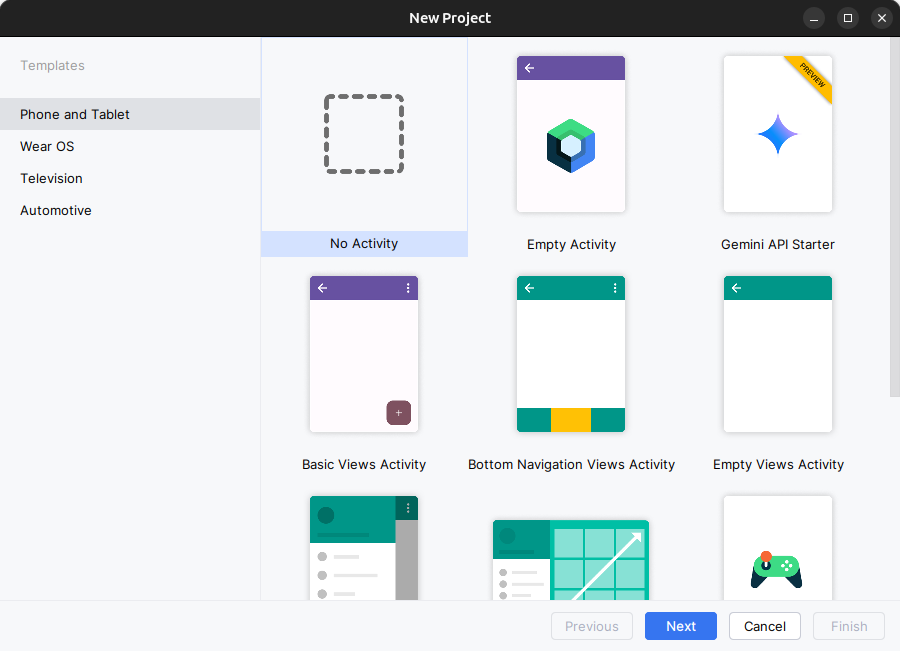 - Dans la fenêtre New Project, entrez Hello World pour le nom de l'application.
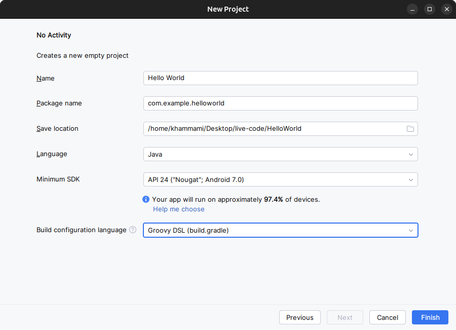
- Acceptez com.example.helloworld comme nom de paquet Package Name ou remplacez le par un domaine de société unique inversé.
- Vérifiez que Save location par défaut est l'emplacement où vous souhaitez stocker votre application Hello World et d'autres projets Android Studio, ou modifiez-le à votre répertoire préféré.
- Assurez que Java est défini comme langage de développement du projet.
Si vous ne prévoyez pas de publier votre application, vous pouvez accepter la valeur par défaut. Sachez que la modification ultérieure du nom du package de votre application représente un travail supplémentaire.
- Assurez que l'API 24: Android 7.0 (Nougat) est défini comme SDK minimal; Si ce n'est pas le cas, utilisez le menu contextuel pour le définir.
Au moment d'écrire ces lignes, ces paramètres rendent votre application Hello World compatible avec 97.4% des appareils Android actifs sur le Google Play Store.
- Cliquez sur Finish.
Android Studio crée un dossier pour votre projet et le construit avec Gradle (cela peut prendre quelques instants).
- Par la suite, on va ajouter une activité (
Activity). UneActivityest une tâche unique et ciblée que l'utilisateur peut faire. C'est un élément crucial de toute application Android. Une Activity est généralement associée à une présentation qui définit la manière dont les éléments de l'interface utilisateur apparaissent sur un écran. Android Studio fournit des modèles d'Activitypour vous aider à démarrer. Pour le projet Hello World, choisis le modèle Empty Activity comme indiqué ci-dessous: sélectionner le module app par le clique droit du souris puis New > Activity > Empty Views Activity.
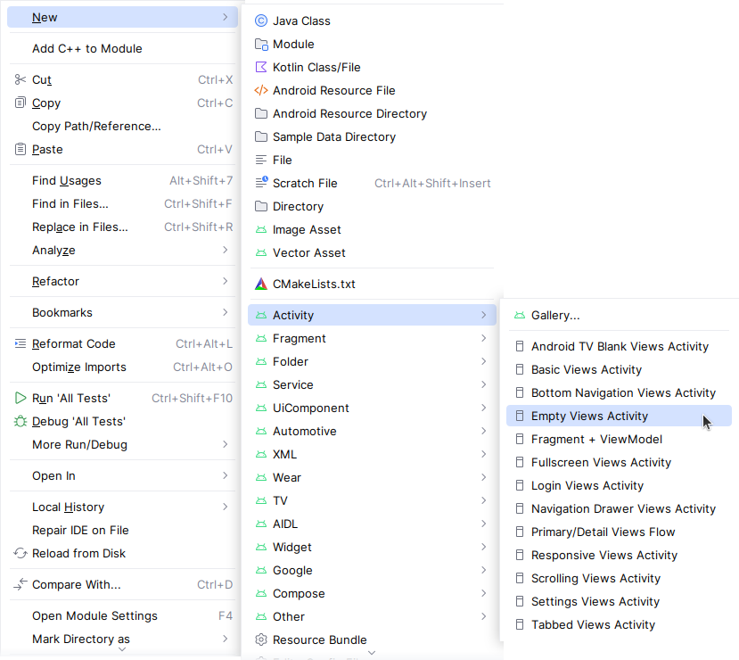
- La fenêtre New Android Activity apparaît (selon le modèle que vous avez choisi à l'étape précédente). Par défaut, l'activité vide fournie par le modèle s'appelle
MainActivity. Vous pouvez changer cela si vous voulez, mais cette leçon utiliseMainActivity. - Assurez-vous que Launcher Activity est coché. Cette activité sera l'activité principale de notre application android qui se lancera lors de l'ouverture de l'application.
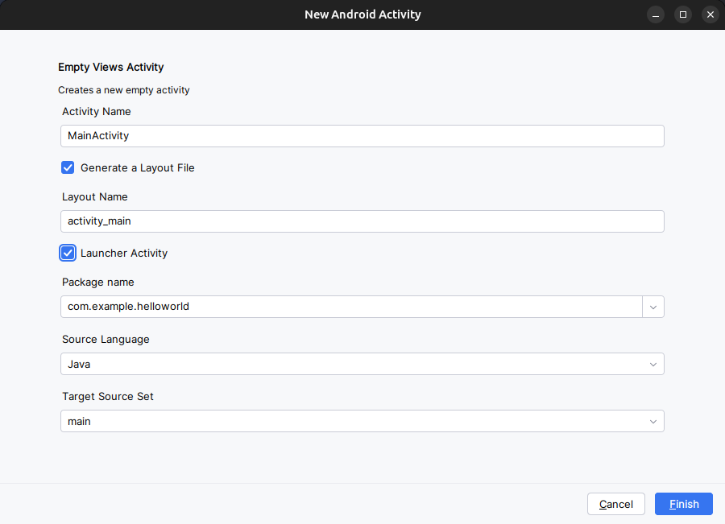
- Assurez que Generate a Layout File est coché. Le nom de la présentation par défaut est
activity_main. Vous pouvez changer cela si vous voulez, mais cette leçon utiliseactivity_main. - Assurez que Source Language est défini sur Java et Target Source Set est sur main.
- Cliquer sur Finish.
Vous pouvez également voir un message "Tip of the day" avec des raccourcis clavier et d'autres astuces utiles. Cliquez sur Close pour fermer le message.
L'éditeur Android Studio apparaît. Suivez ces étapes:
- Cliquez sur l'onglet activity_main.xml pour afficher l'éditeur de "layout"..
- Sélectionnez le mode de vue Design de l'éditeur de présentation dans la barre d'outils en haut à droite pres de l'icone de notifications
 , s'il n'est pas déjà sélectionné, pour afficher un rendu graphique de la présentation, comme indiqué ci-dessous.
, s'il n'est pas déjà sélectionné, pour afficher un rendu graphique de la présentation, comme indiqué ci-dessous.
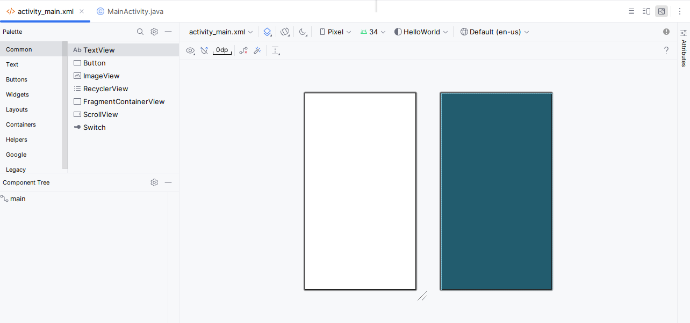
- Cliquez sur l'onglet MainActivity.java pour afficher l'éditeur de code, comme indiqué ci-dessous.
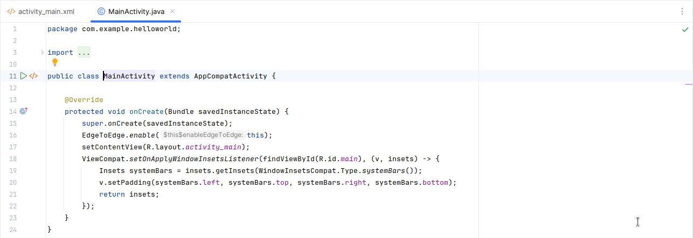
2.2 Explorer le volet "Project" > "Android"
Dans cette pratique, vous explorerez comment le projet est organisé dans Android Studio.
- Si ce n'est déjà fait, cliquez sur l'onglet Project dans la colonne d'onglets verticale du côté gauche de la fenêtre d'Android Studio. La fenêtre Project apparaît.
- Pour afficher le projet dans la hiérarchie de projets Android standard, choisissez Android dans le menu contextuel en haut de la sous-fenêtre Project, comme indiqué ci-dessous.
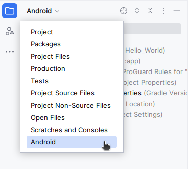
2.3 Explorer le dossier Gradle Scripts
Le système de génération Gradle dans Android Studio facilite l'inclusion de binaires externes ou d'autres modules de bibliothèque dans votre génération en tant que dépendances.
Lorsque vous créez un projet pour la première fois, le volet Projet> Android apparaît avec le dossier Gradle Scripts développé comme indiqué ci-dessous.
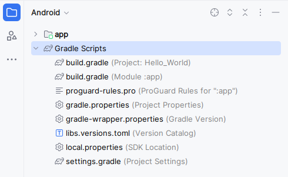
Suivez ces étapes pour explorer le système Gradle:
- Si le dossier Gradle Scripts n'est pas développé, cliquez sur le triangle pour le développer.
Ce dossier contient tous les fichiers nécessaires au système de construction.
- Recherchez le fichier build.gradle (Project: HelloWorld).
Vous y trouverez les options de configuration communes à tous les modules composant votre projet. Chaque projet Android Studio contient un seul fichier de construction Gradle de niveau supérieur. La plupart du temps, vous n'avez pas besoin de modifier ce fichier, mais il est toujours utile de comprendre son contenu.
// Top-level build file where you can add configuration options common to all sub-projects/modules.
plugins {
alias(libs.plugins.android.application) apply false
}- Recherchez le fichier build.gradle (Module: app).
En plus du fichier build.gradle au niveau du projet, chaque module possède son propre fichier build.gradle, qui vous permet de configurer les paramètres de construction de chaque module spécifique (l'application HelloWorld ne comporte qu'un seul module). La configuration de ces paramètres de génération vous permet de fournir des options de packaging personnalisées, telles que des types de construction et des variantes de produit supplémentaires. Vous pouvez également remplacer les paramètres du fichier AndroidManifest.xml ou du fichier build.gradle de niveau supérieur.
Ce fichier est le plus souvent le fichier à modifier lors de la modification de configurations au niveau de l'application, telles que la déclaration de dépendances dans la section dependencies. Vous pouvez déclarer une dépendance de bibliothèque à l'aide de l'une des différentes configurations de dépendance. Chaque configuration de dépendance fournit à Gradle différentes instructions sur l'utilisation de la bibliothèque.
Voici le fichier build.gradle (Module: app) de l'application HelloWorld:
plugins {
alias(libs.plugins.android.application)
}
android {
namespace 'com.example.helloworld'
compileSdk 34
defaultConfig {
applicationId "com.example.helloworld"
minSdk 24
targetSdk 34
versionCode 1
versionName "1.0"
testInstrumentationRunner "androidx.test.runner.AndroidJUnitRunner"
}
buildTypes {
release {
minifyEnabled false
proguardFiles getDefaultProguardFile('proguard-android-optimize.txt'), 'proguard-rules.pro'
}
}
compileOptions {
sourceCompatibility JavaVersion.VERSION_1_8
targetCompatibility JavaVersion.VERSION_1_8
}
}
dependencies {
implementation libs.appcompat
implementation libs.material
implementation libs.activity
implementation libs.constraintlayout
testImplementation libs.junit
androidTestImplementation libs.ext.junit
androidTestImplementation libs.espresso.core
}- Afin de gérer les dépendances et leurs versions de manière centralisée et lisible, il est recommandé de les définir séparément dans un fichier
libs.versions.tomlsous forme d'alias. Ces alias pourront ensuite être appelés dans la section dependencies du script Gradle du module app, simplifiant ainsi la configuration du projet.
[versions]
agp = "8.6.1"
junit = "4.13.2"
junitVersion = "1.2.1"
espressoCore = "3.6.1"
appcompat = "1.7.0"
material = "1.12.0"
activity = "1.9.2"
constraintlayout = "2.1.4"
[libraries]
junit = { group = "junit", name = "junit", version.ref = "junit" }
ext-junit = { group = "androidx.test.ext", name = "junit", version.ref = "junitVersion" }
espresso-core = { group = "androidx.test.espresso", name = "espresso-core", version.ref = "espressoCore" }
appcompat = { group = "androidx.appcompat", name = "appcompat", version.ref = "appcompat" }
material = { group = "com.google.android.material", name = "material", version.ref = "material" }
activity = { group = "androidx.activity", name = "activity", version.ref = "activity" }
constraintlayout = { group = "androidx.constraintlayout", name = "constraintlayout", version.ref = "constraintlayout" }
[plugins]
android-application = { id = "com.android.application", version.ref = "agp" }- Cliquez sur le triangle pour fermer Gradle Scripts.
2.4 Explorer les dossiers "app" et "res"
Tout le code et toutes les ressources de l'application se trouvent dans les dossiers app et res.
- Développez le dossier app, le dossier java et le dossier com.example.android.helloworld pour afficher le fichier java MainActivity. Double-cliquez sur le fichier pour l'ouvrir dans l'éditeur de code.
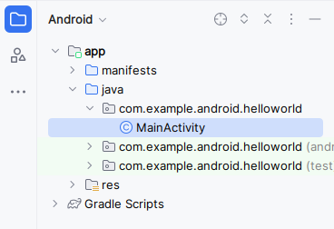
Le dossier java comprend des fichiers de classe Java dans trois sous-dossiers, comme indiqué dans la figure ci-dessus. Le dossier com.example.android.helloworld (ou le nom de domaine que vous avez spécifié) contient tous les fichiers d'un package d'application. Les deux autres dossiers sont utilisés pour les tests et décrits dans un autre codelab. Pour l'application Hello World, il n'y a qu'un seul package et il contient MainActivity.java. Le nom de la première Activity (écran) visible par l'utilisateur, qui initialise également les ressources de l'application, est généralement appelé MainActivity (l'extension de fichier est omise dans le volet Project > Android).
- Développez les dossiers res et layout, puis double-cliquez sur le fichier activity_main.xml pour l'ouvrir dans l'éditeur de "layout".
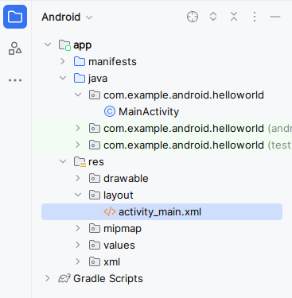
Le dossier "res" contient des ressources, telles que des dispositions, des chaînes et des images. Une activité est généralement associée à une disposition de vues d'interface utilisateur définies sous la forme d'un fichier XML. Ce fichier porte généralement le nom de son activité.
2.5 Explorer le dossier "manifests"
Le dossier manifests contient des fichiers qui fournissent des informations essentielles sur votre application au système Android, que le système doit posséder avant de pouvoir exécuter le code de l'application.
- Développez le dossier manifests.
- Ouvrez le fichier AndroidManifest.xml.
Le fichier AndroidManifest.xml décrit tous les composants de votre application Android. Tous les composants d'une application, tels que chaque activité, doivent être déclarés dans ce fichier XML. Dans d'autres codelabs, vous modifierez ce fichier pour ajouter des fonctionnalités et des autorisations de fonctionnalités. Pour une introduction, voir App Manifest Overview.
<?xml version="1.0" encoding="utf-8"?>
<manifest xmlns:android="http://schemas.android.com/apk/res/android"
xmlns:tools="http://schemas.android.com/tools">
<application
android:allowBackup="true"
android:dataExtractionRules="@xml/data_extraction_rules"
android:fullBackupContent="@xml/backup_rules"
android:icon="@mipmap/ic_launcher"
android:label="@string/app_name"
android:roundIcon="@mipmap/ic_launcher_round"
android:supportsRtl="true"
android:theme="@style/Theme.HelloWorld"
tools:targetApi="31">
<activity
android:name=".MainActivity"
android:exported="true">
<intent-filter>
<action android:name="android.intent.action.MAIN" />
<category android:name="android.intent.category.LAUNCHER" />
</intent-filter>
</activity>
</application>
</manifest>Dans cette tâche, vous utiliserez le Android Virtual Device (AVD) manager pour créer un périphérique virtuel (également appelé émulateur) simulant la configuration d'un type particulier de périphérique Android, puis utiliser ce périphérique virtuel pour exécuter l'application. Notez que Android Emulator a des exigences supplémentaires allant au-delà des exigences système de base pour Android Studio.
À l'aide du AVD Manager, vous définissez les caractéristiques matérielles d'un périphérique, son niveau d'API, son stockage, son apparence et d'autres propriétés, puis enregistrez-le en tant que périphérique virtuel. Avec les périphériques virtuels, vous pouvez tester des applications sur différentes configurations de périphériques (telles que des tablettes et des téléphones) avec différents niveaux d'API, sans avoir à utiliser de périphériques physiques.
3.1 Créer un périphérique virtuel Android
Pour exécuter un émulateur sur votre ordinateur, vous devez créer une configuration décrivant le périphérique virtuel.
- Dans Android Studio, sélectionnez Tools > Android > Device Manager ou cliquez sur l'icône Device Manager 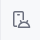dans la barre d'outils. Le volet Device Manager apparaît. Si vous avez déjà créé des périphériques virtuels, le volet les affiche (comme illustré dans la figure ci-dessous). sinon, vous voyez une liste vide.
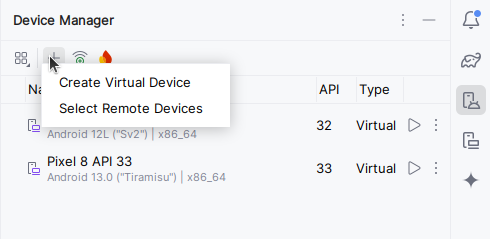
- Cliquez sur le bouton Create Virtual Device. La fenêtre Select Hardware apparaît avec une liste de périphériques matériels pré-configurés. Pour chaque périphérique, le tableau fournit une colonne pour sa taille d'affichage diagonale (Size), sa résolution d'écran en pixels (Resolution) et sa densité de pixels (Density).
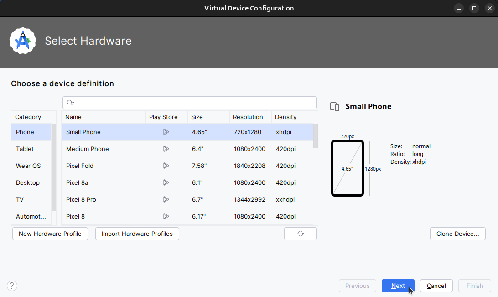
- Choisissez un appareil tel que Nexus one puis cliquez sur Next. L'écran Image système apparaît.
- Cliquez sur l'onglet Recommended s'il n'est pas déjà sélectionné et choisissez la version du système Android à exécuter sur le périphérique virtuel (telle que Oreo).
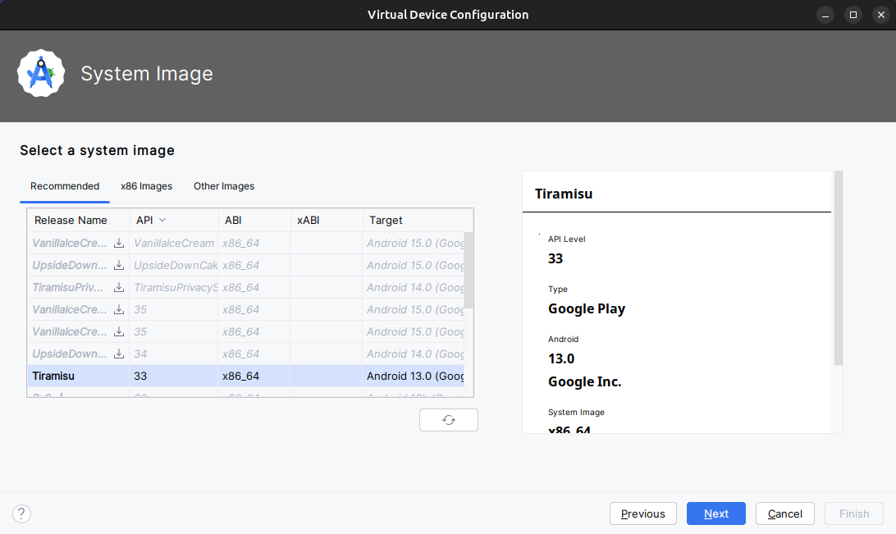
Il existe beaucoup plus de versions disponibles que celles indiquées dans l'onglet Recommended. Regardez les onglets x86 images et Other Images pour les voir.
Si un lien Download est visible à côté de l'image système que vous souhaitez utiliser, celle-ci n'est pas encore installée. Cliquez sur le lien pour lancer le téléchargement, puis cliquez sur Finish lorsque vous avez terminé.
- Après avoir choisi une image système, cliquez sur Next. La fenêtre Android Virtual Device (AVD) apparaît. Vous pouvez également changer le nom de l'AVD. Vérifiez votre configuration , décochez "enable device frame" et cliquez sur Finish.
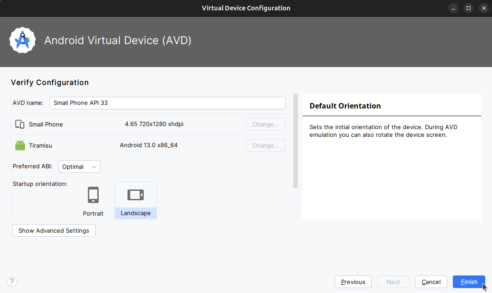
3.2 Exécuter l'application sur le périphérique virtuel
Dans cette tâche, vous allez enfin lancer votre application Hello World.
- Dans le menu déroulant Available Devices (périphériques disponibles), sélectionnez le périphérique virtuel que vous venez de créer.
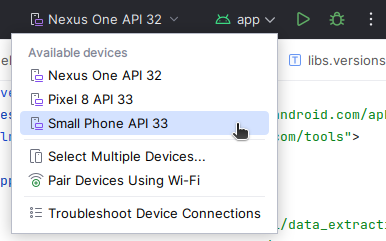 - Dans Android Studio, choisissez "Run" > "Run app" ou cliquez sur l'icône Run dans la barre d'outils.
L'émulateur démarre et démarre comme un périphérique physique. Selon la vitesse de votre ordinateur, cela peut prendre un certain temps. Votre application est créée et une fois que l'émulateur est prêt, Android Studio la télécharge sur l'émulateur et l'exécute.
Vous devriez voir l'application Hello World comme indiqué dans la figure suivante.
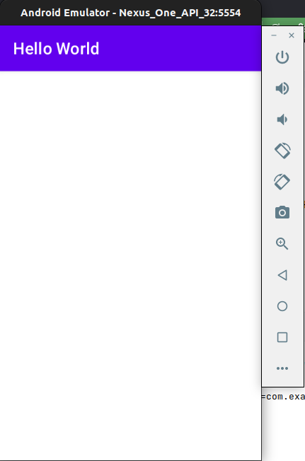
Conseil: lors des tests sur un périphérique virtuel, il est recommandé de le démarrer une fois, au tout début de votre session. Vous ne devez pas la fermer avant d'avoir terminé de tester votre application, afin que celle-ci ne subisse plus le processus de démarrage de l'appareil. Pour fermer le périphérique virtuel, cliquez sur le bouton X en haut de l'émulateur, choisissez Quit dans le menu ou appuyez sur Control-Q sous Windows ou Command-Q sous macOS.
Dans cette dernière tâche, vous exécuterez votre application sur un périphérique mobile physique tel qu'un téléphone ou une tablette. Vous devez toujours tester vos applications sur des périphériques virtuels et physiques.
Qu'est-ce que vous avez besoin:
- Un appareil Android tel qu'un téléphone ou une tablette.
- Un câble de données pour connecter votre appareil Android à votre ordinateur via le port USB.
- Si vous utilisez un système Linux ou Windows, vous devrez peut-être exécuter des étapes supplémentaires pour pouvoir s'exécuter sur un périphérique matériel. Consultez la documentation Utilisation de périphériques matériels. Vous devrez peut-être également installer le pilote USB approprié pour votre appareil. Pour les pilotes USB Windows, voir OEM USB Drivers.
4.1 Activer le débogage USB
Pour permettre à Android Studio de communiquer avec votre appareil, vous devez activer le débogage USB sur votre appareil Android. Ceci est activé dans les paramètres Developer options de votre appareil.
Sur Android 4.2 et supérieur, l'écran Developer options est masqué par défaut. Pour afficher les options du développeur et activer le USB Debugging:
- Sur votre appareil, ouvrez Settings, recherchez About phone, cliquez sur About phone, puis appuyez sur Build number sept fois.
- Retournez à l'écran précédent (Settings / System). Developer options apparaît dans la liste. Appuyez sur Developer options.
- Choisissez USB Debugging.
4.2 Exécuter votre application sur un appareil
Vous pouvez maintenant connecter votre appareil et exécuter l'application à partir d'Android Studio.
- Connectez votre appareil à votre ordinateur de développement avec un câble USB.
- Cliquez sur le bouton Run dans la barre d'outils.
Android Studio installe et exécute l'application sur votre appareil.
Dépannage
Si votre Android Studio ne reconnaît pas votre appareil, essayez les solutions suivantes:
- Débranchez et rebranchez votre appareil.
- Redémarrez Android Studio.
Si votre ordinateur ne trouve toujours pas le périphérique ou le déclare "unauthorized", procédez comme suit:
- Débrancher l'appareil.
- Sur l'appareil, ouvrez Developer Options dans l'application Settings.
- Appuyez sur Revoke USB Debugging authorizations.
- Reconnectez le périphérique à votre ordinateur.
- Lorsque vous y êtes invité, accordez des autorisations.
Vous devrez peut-être installer le pilote USB approprié pour votre périphérique. Consultez la documentation Utilisation de périphériques matériels.
Dans cette tâche, vous allez modifier quelque chose à propos de la configuration de l'application dans le fichier build.gradle(Module:app) afin d'apprendre à modifier et à les synchroniser avec votre projet Android Studio.
5.1 Changer la version minimale du SDK pour l'application
Suivez ces étapes:
- Développez le dossier Gradle Scripts s'il n'est pas déjà ouvert et double-cliquez sur le fichier build.gradle (Module:app).
Le contenu du fichier apparaît dans l'éditeur de code.
- Au sein du bloc
DefaultConfig, modifiez la valeur deminSdkVersionà26comme indiqué ci-dessous (il a été initialement fixé à24).
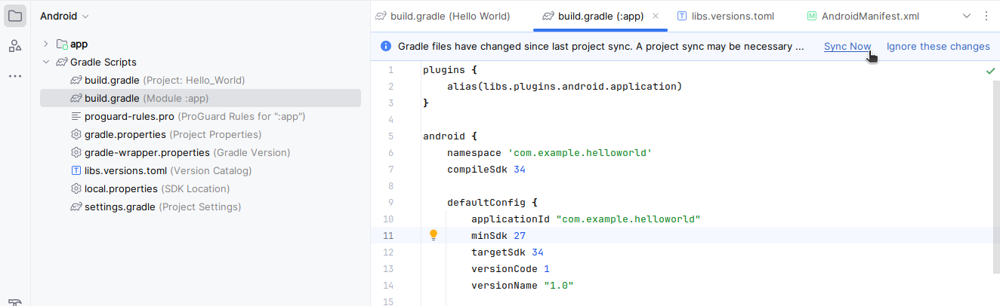
L'éditeur de code affiche une barre de notification en haut avec le lien Sync Now.
5.2 Synchroniser la nouvelle configuration Gradle
Lorsque vous apportez des modifications aux fichiers de configuration de la construction dans un projet, Android Studio exige que vous synchronisez les fichiers du projet afin qu'il puisse importer les modifications et effectuer des vérifications pour vous assurer que la configuration ne créera pas d'erreurs de construction.
Pour synchroniser les fichiers du projet, cliquez sur Sync Now dans la barre de notification qui apparaît lorsque vous effectuez une modification (comme illustré dans la figure précédente) ou cliquez sur l'icône Sync Project with Gradle Files dans la barre d'outils ou sous le menu File.
Lorsque la synchronisation de Gradle est terminée, le message Gradle build finished apparaît dans le coin inférieur gauche de la fenêtre d'Android Studio.
Pour en savoir plus sur Gradle, consultez la documentation sur Build System Overview et Configuring Gradle Builds.
Dans cette tâche, vous allez ajouter des instructions de journal (Log) à votre application, qui affichent des messages dans le volet Logcat. Les messages du journal (Log)sont un puissant outil de débogage que vous pouvez utiliser pour vérifier les valeurs, les chemins d'exécution et signaler les exceptions.
6.1 Afficher le volet Logcat
Pour afficher le volet Logcat, cliquez sur l'onglet Logcat au bas de la fenêtre d'Android Studio, comme indiqué dans la figure ci-dessous ou bien sélectionnez View > Tool Windows > Logcat.
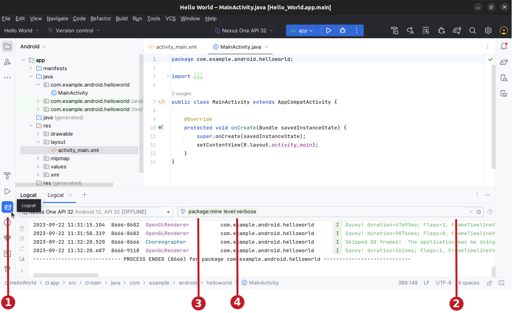
Dans la figure ci-dessus:
- L'onglet Logcat pour ouvrir et fermer le volet Logcat, qui affiche des informations sur votre application en cours d'exécution. Si vous ajoutez des instructions de journal (
Log) à votre application, les messages de journal (Log) apparaissent ici. - Vous pouvez générer des recherches par clé-valeur directement depuis le champ de requête principal. Ce système de requête vous permet de faire des recherches précises et exclut également les journaux en fonction de clés-valeurs. Vous pouvez utiliser des expressions régulières, vous n'en avez pas besoin pour les requêtes. Pour afficher des suggestions, appuyez sur Ctrl+Space dans le champ de requête.
Voici quelques exemples de clés que vous pouvez utiliser dans votre requête :tag,package,process, message,level,age... package:mine: La clé du package accepte une valeur spécialemine. Cette valeur spéciale établit une La requête level établit une correspondance avec le niveau de journalisation du message Logcat, où le niveau d'entrée de journal est supérieur ou égal au niveau de requête.
Par exemple,level:INFOétablit une correspondance avec toute entrée de journal dont le niveau de journalisation est INFO, WARN, ERROR ou ASSERT. Le niveau n'est pas sensible à la casse. Les niveaux validés sont les suivants : VERBOSE, DEBUG, INFO, WARN, ERROR et ASSERT.
6.2 Ajoutez les instructions du journal (log) à votre application
Les instructions de journal (Log) dans votre code d'application affichent des messages dans le volet Logcat. Par exemple:
Log.d("MainActivity", "Hello World");Les parties du message sont:
Log: Classe de journalisation (Log) pour l'envoi de messages de journalisation au volet Logcat.d: le paramètre de niveau du journal de débogage (Debug) permettant de filtrer les messages du journal s'affiche dans le volet Logcat. Les autres niveaux de journalisation sontepour Error,wpour Warn etipour Info."MainActivity": Le premier argument est une balise qui peut être utilisée pour filtrer les messages dans le volet Logcat. C'est généralement le nom de l'activité (Activity) à l'origine du message. Cependant, vous pouvez faire tout ce qui vous est utile pour le débogage.
Par convention, les balises de journal sont définies en tant que constantes pour l'activité (Activity):
private static final String LOG_TAG = MainActivity.class.getSimpleName();"Hello world": Le deuxième argument est le message réel.
Suivez ces étapes:
- Ouvrez votre application Hello World dans Android Studio et ouvrez
MainActivity. - Pour ajouter automatiquement des importations non ambiguës à votre projet (par exemple,
android.util.Logrequis pour utiliserLog), choisissez File > Settings - Choisissez Editor > General >Auto Import. Cochez toutes les cases et définissez Insert imports on paste sur All.
- Cliquez sur Apply, puis sur OK.
- Dans la méthode
onCreate()deMainActivity, ajoutez l'instruction suivante:
Log.d("MainActivity", "Hello World");La méthode onCreate() devrait maintenant ressembler au code suivant:
@Override
protected void onCreate(Bundle savedInstanceState) {
super.onCreate(savedInstanceState);
setContentView(R.layout.activity_main);
Log.d("MainActivity", "Hello World");
}- Si le volet Logcat n'est pas déjà ouvert, cliquez sur l'onglet Logcat au bas d'Android Studio pour l'ouvrir.
- Vérifiez que le nom de la cible et le nom du package de l'application sont corrects.
- Changez le niveau
Logdans le volet Logcat sur Debug (ou laissez-le sur Verbose car il y a si peu de messages de journal). - Exécutez votre application.
Le message suivant devrait apparaître dans le volet Logcat:
11-24 14:06:59.001 4696-4696/? D/MainActivity: Hello WorldDocumentation d'Android Studio:
- Android Studio download page
- Android Studio release notes
- Meet Android Studio
- Logcat command-line tool
- Android Virtual Device (AVD) manager
- App Manifest Overview
- Configure your build
Logclass- Create and Manage Virtual Devices
Autre:
Créer et exécuter une application
- Créer un nouveau projet Android à partir du modèle vide (Empty Views Activity).
- Ajouter des instructions de journalisation pour différents niveaux dans
onCreate()dans l'activité principale. - Créer un émulateur pour un appareil, en ciblant la version d'Android de votre choix, puis exécuter l'application.
- Utiliser le filtrage dans Logcat pour rechercher vos instructions de journal et ajuster les niveaux pour afficher uniquement les instructions de débogage ou d'erreurs.
Répondre à ces questions
Question 1
Quel est le nom du fichier de mise en page de l'activité principale?
MainActivity.javaAndroidManifest.xmlactivity_main.xmlbuild.gradle
Question 2
Quel est le nom de la ressource chaîne qui spécifie le nom de l'application?
app_namexmlns:appandroid:nameapplicationId
Question 3
Quel outil utilisez-vous pour créer un nouvel émulateur?
- Android Device Monitor
- Device (AVD) Manager
- SDK Manager
- Theme Editor
Question 4
Supposons que votre application inclut cette instruction de journalisation:
Log.i("MainActivity", "MainActivity layout is complete");Vous voyez la mention "MainActivity layout is complete" dans le volet Logcat si le menu de niveau Log est réglé sur lequel des éléments suivants?
- Verbose
- Debug
- Info
- Warn
- Error
- Assert
Soumettez votre application pour la notation
Vérifiez que l'application dispose des éléments suivants:
- Une activité qui affiche "Hello World" à l'écran.
- Des instructions de
LogdansonCreate()dans l'activité principale. - Le niveau de
Logdans le volet Logcat n'affiche que les instructions de débogage ou d'erreurs.